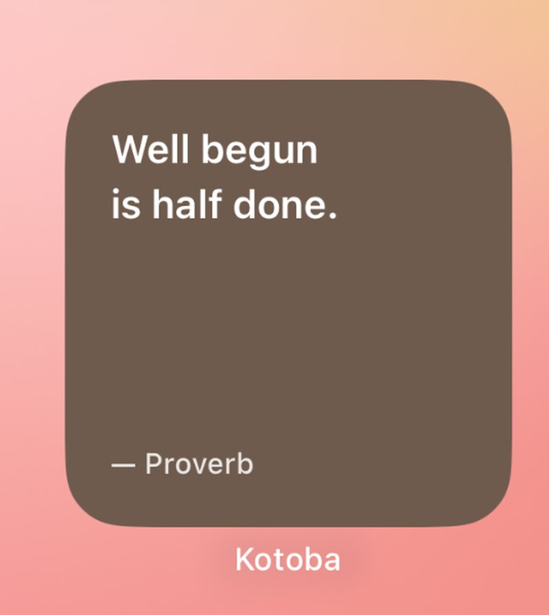

위젯을 길게 누르고 다음을 탭하세요: 위젯 편집. 그다음 아래 항목에서 말을 고르세요: 문구. 고르지 않으면 목록의 첫 번째 문구가 표시돼요. 위젯을 탭하면 앱에서 그 문구가 열려요.

잠금 화면에서
잠금 화면을 길게 누르고 다음을 탭하세요: 사용자화. 잠금 화면을 고르고 위젯 영역을 탭해 Kotoba를 추가하세요. 잠금 화면용 스타일은 세 가지예요. 문구는 똑같이 “위젯 편집”에서 고르면 돼요.
더 쓰고 싶다면?
Kotoba Pro는 구독이 아니라 한 번만 구매하면 돼요:
문구를 원하는 만큼
위젯을 원하는 만큼, 위젯마다 다른 말로
매일, 매주 또는 매시간 내 문구 중에서 새 문구로 (원하면 태그로 범위 좁히기)
위젯마다 글꼴, 글자 크기, 정렬 설정
백업 가져오기와 iCloud 동기화 (새 기기나 두 번째 기기용)
자주 묻는 질문
계정이나 구독이 필요한가요?아니요. 문구는 iPhone에만 저장돼요. 문구 20개와 위젯에 문구 1개 표시는 무료예요. Kotoba Pro는 구독이 아니라 한 번만 구매하면 돼요.
위젯에 “Pro에서 표시”라고 나와요.무료 버전에서는 위젯에 문구 1개만 표시돼요. 다른 말을 표시하려면 Kotoba에서 메뉴(…)를 열고 “위젯 문구 바꾸기”를 탭한 다음, 위젯을 길게 누르고 “위젯 편집”을 탭해 새 문구를 고르세요. 여러 위젯에 서로 다른 문구를 동시에 표시하는 것은 Pro 기능이에요.
말이 매일 바뀌게 할 수 있나요?네, Pro에서 가능해요. “위젯 편집”에서 “표시 방식”을 “매일 바뀜”, “매주 바뀜” 또는 “매시간 바뀜”으로 설정하세요. 직접 저장한 문구 중에서 고르며, 태그로 범위를 좁힐 수도 있어요.
문구가 20개가 되면 어떻게 되나요?저장한 문구는 하나도 삭제되지 않아요. 새 문구를 추가하는 것만 멈춰요. Pro에서는 원하는 만큼 추가할 수 있어요.